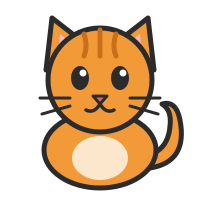

Кіт бігає сам: годинник Clock, кнопка «Старт / Стоп»
Розробка мобільних додатків · 6 клас · Урок 13 з 36 · 4 грудня
Бали — 0, кіт — у лівому верхньому куті. Які три блоки в підкові?
Клацніть, щоб перевірити.
Найбільший X?
Клацніть, щоб перевірити.
240 — 320 − 80
Найбільший Y?
Клацніть, щоб перевірити.
320 — 400 − 80
| Властивість | Що задає |
|---|---|
| TimerInterval | як часто «дзвонить», у мілісекундах: 1000 — щосекунди, 500 — двічі на секунду |
| TimerEnabled | ✔ — таймер працює, без ✔ — вимкнений |
| TimerAlwaysFires | «дзвонить», навіть коли застосунок згорнули |
Клацніть, щоб перевірити.
5 разів — раз на секунду
Клацніть, щоб перевірити.
10 разів — двічі на секунду
Клацніть, щоб перевірити.
5 разів — раз на дві секунди
Клацніть, щоб перевірити.
Жодного разу — таймер вимкнений
Дві кнопки: «Старт» вмикає, «Стоп» вимикає
| Блок Logic | Що означає |
|---|---|
| true | так, увімкнено — як ✔ |
| false | ні, вимкнено — без ✔ |
| not | навпаки: з true робить false, з false — true |
На старті таймер вимкнений. Натиснули кнопку…
Клацніть, щоб перевірити.
працює — кіт бігає
Клацніть, щоб перевірити.
вимкнений — кіт стоїть
Клацніть, щоб перевірити.
працює — непарне число натискань
Clock — таймер
TimerInterval
TimerEnabled ✔
TimerAlwaysFires
when Clock1.Timer
set Clock1.TimerEnabled to
set Clock1.TimerInterval to
Clock1.TimerEnabled
true — так
false — ні
not — навпаки
Clock1: TimerEnabled без ✔. Кнопки «Старт / Стоп» немає.
Клацніть, щоб перевірити.
Таймер ніхто не вмикає. Поставити ✔ або додати кнопку з not
Клацніть, щоб перевірити.
Має бути false. true лише вмикає ще раз
Хотіли щосекунди. Clock1: TimerInterval 10000.
Клацніть, щоб перевірити.
Зайвий нуль: 10000 мс = 10 с. Треба 1000
Урок 14 · 11 грудня · Процедура
До пункту 1